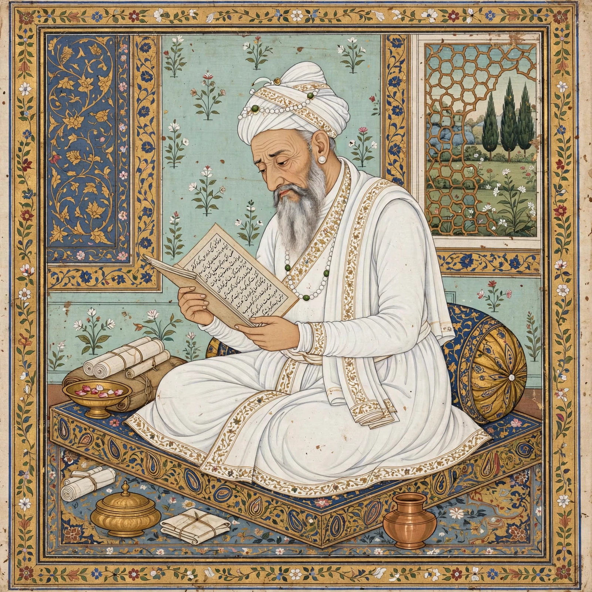

Aurangzeb
| Aurangzeb | |
|---|---|
| Reign | 31 July 1658 – 3 March 1707 |
| Predecessor | Shah Jahan |
| Successor | Bahadur Shah I |
| Born | 3 November 1618, Dahod, Mughal Empire |
| Died | 3 March 1707 (aged 88), Ahmednagar |
| Regnal name | Alamgir I ("Conqueror of the World") |

Aurangzeb (3 November 1618 – 3 March 1707), also known by his regnal name Alamgir I, was the sixth emperor of the Mughal Empire, ruling from 1658 until his death in 1707. The third son of Shah Jahan, he seized the throne after defeating his elder brother Dara Shikoh in a war of succession and imprisoning his father in Agra Fort.
Reign
Under Aurangzeb the Mughal Empire reached its greatest territorial extent, covering almost the whole of the Indian subcontinent. A devout Muslim who lived austerely, memorised the Quran and compiled the Fatawa-e-Alamgiri, he reversed several of his predecessors' policies: he reimposed the jizya tax on non-Muslims in 1679 and ordered the destruction of some Hindu temples, measures that remain central to his controversial legacy.
From 1681 he campaigned in the Deccan, annexing the sultanates of Bijapur and Golconda, but became bogged down in a decades-long war against the Marathas under Shivaji and his successors. The costs of these wars strained the empire's finances and administration, and Mughal power declined rapidly after his death.
Legacy
Aurangzeb is one of the most debated figures in South Asian history: remembered by admirers for personal piety, administrative energy and imperial expansion, and by critics for religious intolerance and policies that alienated Hindu subjects and strained the empire. He died at Ahmednagar in 1707 and was buried in a simple open grave at Khuldabad, in accordance with his wishes.
See also: Mughal Empire · Shah Jahan · Shivaji · Maratha Empire